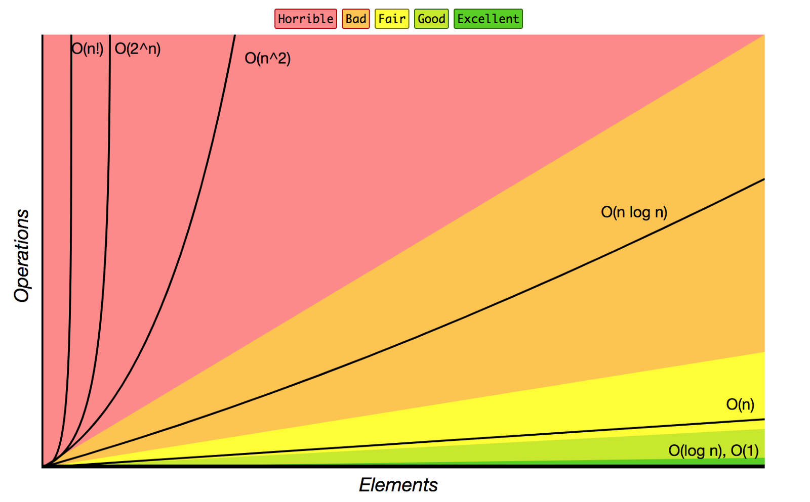

pull request - A method of submitting contributions to an open development project. A pull "request" occurs when a developer asks for changes committed to an external repo to be considered for inclusion in a project's main repo.
It's called a pull request because you're requesting the target repo to please "pull" your changes in from your own repo/copy of their repo.
Continuous integration - Continuous integration - When Git, Gulp or something similar, and a cloud platform are used to automate the build and testing of code every time a team member commits changes to watched files (which with Git is usually the entire repo).
Committing code triggers an automated build system to grab the latest code from the shared repository and to build, test, and validate the full master branch.
Terms
reverting modifications
merging upstream updates
Gulp vs. Webpack
Webpack - like Gulp. It's a bundle system that takes files like SASS files or JS files with modules and dependencies or images that are connected in some way, and bundles them into standard JS, CSSm PNG and JPG files. This "bundling" is essentially the same as the build process.
Webpack does many of the same things as Gulp:
-Takes files, runs them through some form of conversion/transpiling
-Spits out something the browser can understand
If you need to do basic bundling, just stick with Gulp. But if mixing in multiple JS files and maybe having some of them split up in certain ways, or if you need to have jQuery and Bootstrap split out but still want to share them between files,or if you need multiple HTML files then look at Webpack.
Gulp vs. Webpack
Software Design Principles
SDP and Programming Basics
Program Lifecycle Phase
How a program runs - (program lifecycle phase)
1. Edit time
2. Compile time
3. Link time -
4. Distribution time -
5. Installation time
6. Load time
7. Run time
Edit time
This is when the source code of the program is being edited. This spans from initial creation to any a. bug fix, b. refactoring, or c. addition of new features.
Editing is typically performed by a person, but aotmated design tools and metaprogramming systems may also be used.
Compile time
When source code is translated "down" (I think) into machine code by a compiler. This partly involves language checking, such as ensuring proper use of the type system.
The result of successful compilation is an executable.
Link time
Connects all necessary machine code components of a program, including externals .
It is very common for programs to use functions implemented by ext libraries,
all of which must properly be linked together.
There are two types of linking: static linking, which is when the connection is made by the compiler. It always occurs prior to execution.
Dynamic linking, however, is performed by the operating system just before, or even during execution.
Distribution time
When a copy of the program is being transferred to a user.
This dist format is typically an executable, bit it can also be the source code, especially for a program writtn in an interpreted language.
Distribution can be physical media such as a USB drive, or a remote download via the Internet.
Installation time
This gets the distributed program ready for execution on the user's computer, which often includes storing executables for future loading by the operating system.
Load time
When the OS takes the program's executable from storage, such as a hard drive, and places it into active memory, in order to begin execution.
Run time
This is the execution phase, when the CPU executes the program's machine code instructions. Programs may run indefinitely. If execution terminates, it will either be normal and expected behavior, or result in an abnormality such as a crash.
Functional Programming
Functional programming involves mathematical "functions".
Pros:
Using the functional paradigm. you can avoid shared state/side-effects, eliminating bugs from multiple functions competing for the same resources
More generally reusable code compared to OOP
Cons:
Potentially reduce readability
Not everyone understands functional programming as well as OO/imperative
OOP = more conversational since it's more popular, functional = more academic and formal
OOP - tends to be imperative rather than declarative.
Pros: Somewhat straightforward
Cons: Typically depends on shared state.
Subset and Superset
With A and B, if A is B is a superset of A, then all of A is contained in B (and then extended), so all elements of A are also elements of B, so where B is a superset of A, then A is a subset of B (the subset is the smaller thing that is contained in another thing).
SDP Problems
dependency hell
MVC
1. The model represents the data
2. The view displays the model data (aka UI elements)
3. The view, when interacted with, sends user actions (i.e. clicks etc) to the controller. The controller evaluates HTML expressions.
2-way data binding vs 1-way data flow
In 2-way binding, UI fields are bound to model data dynamically so the user updates the the UI field and the model changes as well, and vice-versa.
1-way data flow means the model is the single source of truth.
Controller example:
When a call is made to:
http://example.com/news/latest/10
We can imagine there's a controller named "news".
The method being called on news would be "latest".
That news method's job could be to grab 10 news items, and render them on the page.
MVC URL Patterns:
http://example.com/[controller-CLASS]/[controller-METHOD]/[ARGUMENTS (for method)]
This is typical, although it can change as URL schemes become more complex.
Build Process
Consists of the following:
Fetching the code from the source control repository
Compile the code and check the dependencies/modules
Run automated unit tests
Link libraries, code, files, etc. accordingly
Once successfully passed, artifacts are built and stored
Archive the build logs
Send the notification mails
Build Types
Full Build
This performs a build from scratch. It treats all resources in a project as if they've never been seen by the build server/tool.
A full build always starts from an empty work area: it takes a full project as an input, figures out the dependencies, compiles all the source files in your project, and builds all the parts in order accordingly. It then assembles them into the build artifact as a final output.
Incremental Build
Uses a "last build state", maintained internally by the build/server tool to do an optimized build based on the changes in the project since the last build.
Build Terms
manual build trigger - the most common; when you're ready with the change you can go to the build server using a build tool, and trigger the build.
scheduled build trigger - configured to run the build at a specific time of the day, or when a specific event occurs (not unlike running scheduled backups of a site to cloud storage).
source code repository build trigger - initiates a build whenever any source code change occurs in the repository; so whenever a developer commits any change in the version control system, this trigger gets initiated. Can be customized whether you want the build to trigger when any file is changed, a single file is changed, or any files being watched are changed.
post-process build trigger - listens for post-processing events.
Microservices vs. Monolithic
Microservices are loosely coupled, collaborating services (utilizing service-oriented architecture).
Services communicate using either synchronous protocols such as HTTP/REST/GRAPHQL or async protocols such as AMQP.
Each service has its own database in order to be DECOUPLED from other services.
They're referred to as "micro" services for a reason: the amazon.com website application calls 100-150 services to get the data used to build a web page.
Most large scale websites (Amazon, Netflix etc) have evolved from a monolithic to a microservice architecture.
Example of services:
An app might have order or customer management "services".
Use cases
When do you need to use microservices?
-When you have an app that's scaling and the developers to support it
-When you need to take advantage of continuous deployment
Microservices are useful when you have an application that may have/need:
Integration with other apps via web services, etc.
Handle HTTP reqs and msgs by executing business logic
Access a database
Exchange msgs w other systems
Return an HTML/JSON response
Example of when you need to utilize microservices:
1. There's a team of devs working on the app
2. New members must quickly become productive
(So I could get assigned something that's tracked in Trello, etc. - integrated with Github - probably slack as the communication)
3. App must be easy to understand and modify (clear documentation)
4. You want to practice continuous deployment of the app (XP)
5. You must run multiple copies on multiple machines in order to satisfy scalability and availability requirements. (cloud)
6. You want to take advantage of emerging tech (frameworks, langs, etc.)
7. You need data consistency.
Benefits and Drawbacks of Microservices
Benefits:
-Microservices are relatively small
-IDE is faster making devs more productive
-App starts faster, speeding up deployments
-Each service can be deployed independently of other services - escapes dependency hell
-Scalability
-Each team can therefore develop, deploy and scale their services independently of all other teams
-Eliminates any long-term commitment to a tech stack (i.e. vendor lock)
Drawbacks:
-Devs must deal with extra complexity of creating a distributed system
-Dev tools / IDE's are usually oriented with building MONOLITHIC apps, and don't provide explicit support for developing distributed apps
-Testing becomes more difficult
How to partition the system into microservices:
-Separating by use case, for example "Shipping Service" is one use so any relevant code can be bundled into that as necessary. Then you might have an "Account Service" that may need different resources from said Shipping Service.
-Implementing queries that need to retrieve data owned by multiple services (async taken into consideration)
Agile Development
Agile development workflow graphic
AGILE - Requirements and solutions evolve through the collaborative effort of self-organizing, cross-functional teams.
-Adaptive planning
-Evolutionary dev
-Early delivery
-Continuous improvement
-Rapid and flexible response to change
S O L I D
Single responsibility principle
Open/closed principle
Liskov substitution principle
Interface segregation principle
Dependency inversion principle
Single responsibility principle -
A CLASS should have only a single responsibility (reduce coupling).
Open/closed principle -
Software entities should be open for extension but closed for modification.
Liskov substitution principle -
Objects in a program should be replaceable w instances of their subtypes, w/o altering the correctness of that program.
Interface segregation principle -
Many client-specific interfaces are better than one general-purpose interface.
Dependency inversion principle -
One should depend on abstractions not concretions (a.k.a. explicit)
States and State Management
State is a very important consideration when developing SPAs.
State management is the practice of putting all of the dynamic values of an application — user inputs to a form, the current page's posts — in one place.
Some state is server-based (AJAX, websockets), but a lot of state has nothing to do with a server: isPlaying, isTyping, etc.
Service Workers
Service workers - a fundamental technology in the future web platform. They're scripts that the browser runs in the background, separate from a web page (almost like the web browser version of a daemon). They enable you to access features that don't need a web page or user interaction, like push notifications, background sync and offline experiences.
Main aspects:
Life Cycle
Registration
High Performance Loading
HTTPS (required)
Introduction to service workers
Software Architectures
Two-tier architecture - Software architecture where a presentation layer or interface (or view or UI) runs on a client (the computer, for example), and a data layer or data structure gets stored on a server.
Three-tier architecture -
PRESENTATION LAYER (client computers)
BUSINESS LOGIC (application server)
DATABASE (database server)
Flow Chart Basics
An oval shape is used to indicate the start and end of the program.
A parallelogram is used to indicate
input and output operations.
A rectangle is used to indicate operations like assignment, expressions, etc.
A diamond shape indicates a decision operation, i.e. conditions.
A hexagon shape indicates loops, iterations, or repititions.
Arrows indicate the direction/flow of execution
A circle is used when a flowchart spreads to more than one page; it's used to indicate connection between them.
Definitions
Modularization - attempts to be an answer to the JS scalability question.
However it adds another layer of API that developers have to get familiar with.
By splitting code and functionality into smaller modules it's easier to solve problems in your code and to work in a team on the same codebase.
*Every module should have exactly one purpose and task to do.
*A module doesn't know about the outside logic of the application, and can be reused in different locations in situations (loose coupling).
invariant - a statement about something that is held to be true, like a meta property of anything that's always true (or true under certain conditions).
read-only - An object that does not expose any way to change it. However, read-only objects are allowed to change.
Imperative - Imperative program consists of commands for the computer to perform.
Ex. low level languages, since the way computer hardware is designed is to executre machine code, which is native to the computer, and written in an imperative style.
Executable - a.k.a. "binary" - [machine] code that causes a computer to perform indicated tasks according to encoded instructions, as opposed to a data file which must be parsed by a program to be meaningful.
scripts - programs written for a special run-time environment (like a browser or an OS) that automate the execution of tasks.
scripting language - a.k.a. "extension language" - very high-level (since they're about nabstraction" in the form of automating otherwise manual tasks).
parsing - the process of analysing a string of symbols conforming to rules of "grammar" a.k.a. syntax.
So running a program through a parser means it will be checked to see if its code does anything.
refactoring - restructuring existing code, a.k.a. changing the factoring, without changing the external behavior (like to make a program run more efficiently etc.)
memoizing - an optimization technique used to speed up programs by storing the results of expensive function calls (ex. recursion) and returning the cached result when the SAME *INPUT* occurs again.
encapsulation - grouping of data and behavior into one entity.
deep vs shallow copy (cloning) -
shallow - Duplicate as little as possible (like a minimum setting)
deep - When an object is copied along with the objects to which it refers (like a max setting on something).
overhead - excess use of memory, bandwidth, or other resources read to perform a specific task ("aka engineering overhead").
use case - a written description of how users will perform tasks on your website i.e. specs for how a user interacts w a something.
It can also be thought of as a list of actions / events (steps) defining the interaction between a role (ACTOR) and a system to achieve a goal. The "actor" can be a human or an external system.
A customer must click on this, click on that, etc.
This data then gets sucked into the biz logic via a controller / service for example
dependency injection - where one object supplies the dependencies of another.
A dependency is an object that can be used (i.e. a service).
It's all about passing the service to the client rather than allowing the client to build/find the service.
state management
strong vs weak type
dynamic vs static type
Basics
Algorithm - a function that transforms an input data structure into a certain output data structure. The logic inside decides the transformation.
The inputs and outputs should ideally be clearly defined as unit tests. A thorough analysis of the problem is needed.
Things to consider:
What variables will be needed?
How many loops and what kinds?
Are there any methods that can help?
Edge case to consider?
Can helper functions be extracted or abstracted? (an algorithm typically needs to be scalable)
Should there be some kind of caching mechanisms?
1. To make the problem more concrete, draw diagrams
2. When a high-level structure of the solution begins to appear, the pseudocode can begin.
3. Look ahead for opportunities to refactor and reuse code.
4. Sometimes, similar-behaving functions can be combined into a more general function that accepts an extra parameter.
5. Keeping functions pure to ease testing and maintenance also shows foresight.
6. Consider architectural and design patterns in your decisions.
7. Any time there's a "sum of the previous two numbers" (fibonacci, for example), recursion is the simplest approach.
8. Generally, memory optimizations (space) will need to be sacrificed for performance gains (time).
Big O Notation
Big O - a way to measure how well an algorithm scales as the amount of data involved is increased (i.e. how well it would work with a 10-element array, versus a 10,000-element array).
It's a mathematical notation describing the limiting behavior of a function when the argument tends towards a particular value, or infinity.
It's also used to classify algorithms according to how their running time
or space requirements (typically referred to as time and space complexities respectively) grow as the input size grows.
A description of a function in Big O usually only provides an upper bound on the growth rate of the function.
Calculating time complexity:
Remove all constant factors, so the running time can be estimated in relation to n as n approaches infinity. Examples:
statement;
is constant. The running time of the statement will not change in relation to n.
for (i=0; i < n; i++){
for (j=0; j < n; j++)
statement;
}
is quadratic.
Constant: O(1)
Logarithmic: O(log n)
Linear: O(n)
Linearithmic: O(n log n)
Quadratic: O(n²)
Expontential: O(2^n)
Factorial: O(n!)
The most optimum algorithm scales 1. In a Constant time and space, meaning it doesn't care about the growth of its inputs.
The next best is 2. Logarithmic time or space,
then 2. Linear,
then 3. Linearithmic,
then 4. Quadratic,
then 5. Exponential,
and lastly 6. Factorial time or space.
To assist in the calculation of runtime complexities, you approximate the scalability of an algorithm by extrapolating its input sizes towards infinity, before counting the number of operations required.
At this worst-case runtime upper-bound, you can drop coefficients and additive terms and retain only factors that dominate the function.
Just a few categories can describe the scalability of almost any algorithm.

Big O Notation Cheat Sheet
Big O Classes
1. O(1) Complexity (Constant)
Example - Accessing array index:
var a = arr[5];
Other examples:
push/pop on a stack
insert and removal from queue
insert a node in a linked list
*link
2. O(n) Complexity (Linear)
Example - Linear Search:

Example - Check for palindrome:
function palindrome(str) {
var re = /[\W_]/g;
var lowRegStr = str.toLowerCase().replace(re, '');
var reverseStr = lowRegStr.split('').reverse().join('');
return reverseStr === lowRegStr;
}
palindrome("A man, a plan, a canal. Panama");
Other examples:
traverse an array
traverse a linked list
compare two strings
3. O(log n) Complexity (Logarithmic)
*The basic premise with O(log n) is not having to use the complete data, and reducing the problem size with every iteration.
Example - Binary Search:

Other examples:
Calculate fibonacci numbers
4. O(n log n) Complexity (Linearithmic, aka "Quasilinear") (
Example - Merge Sort:

Merge Sort example:
// If array is empty or consists of one element then return this array since it is sorted.
if (originalArray.length <= 1) {
return originalArray;
}
// Split array on two halves.
const middleIndex = Math.floor(originalArray.length / 2);
const leftArray = originalArray.slice(0, middleIndex);
const rightArray = originalArray.slice(middleIndex, originalArray.length);
// Sort two halves of split array
const leftSortedArray = this.sort(leftArray);
const rightSortedArray = this.sort(rightArray);
// Merge two sorted arrays into one.
return this.mergeSortedArrays(leftSortedArray, rightSortedArray);
}
mergeSortedArrays(leftArray, rightArray) {
let sortedArray = [];
// In case if arrays are not of size 1.
while (leftArray.length && rightArray.length) {
let minimumElement = null;
// Find minimum element of two arrays.
if (this.comparator.lessThanOrEqual(leftArray[0], rightArray[0])) {
minimumElement = leftArray.shift();
} else {
minimumElement = rightArray.shift();
}
// Call visiting callback.
this.callbacks.visitingCallback(minimumElement);
// Push the minimum element of two arrays to the sorted array.
sortedArray.push(minimumElement);
}
// If one of two array still have elements we need to just concatenate
// this element to the sorted array since it is already sorted.
if (leftArray.length) {
sortedArray = sortedArray.concat(leftArray);
}
if (rightArray.length) {
sortedArray = sortedArray.concat(rightArray);
}
return sortedArray;
}
}
*Merge sort is based on divide-and-conquer.
It's also based on the idea that arrays of multiple items can't be compared until they're sorted.
Merge sort splits an array into two halves, recursively, until you reach a point in which multiple pairs of single-item arrays are compared to each other.
1. Divide Step -
If a given array A has zero or one element, simply return; it's already sorted!
Otherwise, split A[p .. r] into two subarrays A[p .. q], and A [q + 1 .. r]. Each one contains about half the elements of A[p .. r] - that is, q is the halfway point of A[p .. r].
2. Conquer Step -
Conquer by recursively sorting the two new subarrays A[p .. q] and A[q + 1 ..r].
3. Combine Step
Combine the elements back in A[p .. r] by merging the two newly sorted subarrays into a sorted sequence. To do this, define a procedure (function) MERGE(A, p, q, r).
Merge sort example
Divide and Conquer example:
Other examples of O(n log n):
heap sort:

quick sort:

some divide and conquer algorithms (merge sort)
5. O(n2) (Quadratic)
Example - Bubble Sort:

Other examples:
insertion sort
selection sort
traversing a simple 2D array
6. O(2n Complexity (Quadratic)
*Often recursive algorithms that solve a problem of size N, by recursively solving two smaller problems of size N-1.
Example:
function solveHanoi(n, from_peg, to_peg, spare_peg)
{
if (n<1) {
return;
}
if (n>1) {
solveHanoi(n-1, from_peg, spare_peg, to_peg);
}
console.log("/"move from " + from_peg + " to " + to_peg");
if (n>1) {
solveHanoi(n-1, spare_peg, to_peg, from_peg);
}
}
Javascript Data Structures
Without data structures, we have no objects by which to apply logic.
Without algorithms, objects cannot be transformed.
At the high level there are essentially three types of data structures:
Stacks and Queues are "array-like" strucrures that differ only in how items are inserted and removed. These are the simplest in terms of complexity and can be constructed from Linked List.
Linked Lists, Trees, and Graphs are structures with nodes that keep references to other nodes.
Hash Tables - depend on hash functions to save and locate data.
Arrays
In Javascript, no other object has more utility mthods than arrays (sort, reverse, slice, splice, etc.)
Since arrays are zero-indexed, the last element occurs at array.length - 1.
Arrays are the most optimal for indexing (pushing), but can be terrible at inserting, deleting (not popping), and searching. In Javascript, arrays can also grow dynamically.
Stack
The most important Stack in JS is the Call Stack, where we push in the scope of a function whenever we execute it.
Programatically it's just an array with two principled operations: push and pop.
Push adds elements to the top of the array, while Pop removes them from the same location.
Stacks follow the "Last In, First Out" (LIFO) protocol.
Queue
Javascript is an event-driven programming language, making it possible to support non-blocking operations.
Internally, the browser manages only one thread to run the entire JS code using the event queue to enqueue listeners, and the event loop to "listen" for the registered events .
To save CPU resources, listener functions dequeue and execute only when the call stack is empty.
Promises depend on this event-driven architecture to allow a synchronous-style execution of asynchronous codes that does not block other operations (non-blocking).
Programmatically speaking, queues are just arrays with two primary operations: unshift and pop.
Unshift enqueues items to the end of the array, while Pop dequeues them from the beginning of the array.
Queues follow the "First In, First Out" (FIFO) protocol.
Linked List
Like arrays, Linked Lists store data elements in a sequential order.
Instead of indeces, linked lists have pointers to other elements.
The first node is called the head, while the last node is called the tail.
In a singly-linked list each node has only one pointer to the next node - here the head is where you begin the walk down the rest of the list.
In a doubly-linked list a pointer to the previous node is also kept. Therefore you can also start from the tail and walk backwards toward the head.
Advantages Over Arrays
Linked lists have constant-time insertions and deletions because you can just update the pointers.
To do the same operations in arrays requires linear time, because subsequent items need to be shifted over.
Linked lists can also grow as long as there is space - even dynamic arrays that automatically resize can become incredivly expensive. There is a tradeoff, however: to lookup or edit an element in a linked list, you might have to walk the entire length which equates to linear time, while with array indeces such operations are trivial.
Tree
A Tree is like a linked list, however it keeps references to multiple child nodes in a hierarchical structure. That is, each node can have no more than one parent.
An example is the DOM, with a root html node that branches into the head and body nodes (html tags), which further subdivide into all familiar html tags.
Binary Search Tree
This type of Tree is special, because each node can have no more than two children. The left child must have a value that is smaller than or equal to its parent, while the right child must have a value that's greater.
This lets you search for any value in logarithmic time because you can ignore one-half of the branching with each iteration. The smallest and largest value can easily be found at the leftmost and rightmost leaf, respectively.
Traversing though the tree can happen vertically or horizontally. Depth-First Traversal (DFT) in the vertical direction allows a recursive algorithm to be more elegant than an iterative one. Nodes can be traversed either pre-order, in-order, or post-order. Binary trees are optimal for sorting.
With Breadth-First Traversal (BFT) in the horizontal direction, an iterative approach is more elegant than a recursive one. This requires the use of a queue to track all children nodes with each iteration.
If the shape of a tree is deeper than it is wide, then DFT is a better choice over BFT.
Graph
If a tree is free to have more than one parent then it becomes a Graph.
Edges that connect nodes together in a graph can be directed or undirected, weighted or unweighted. Edges that have both direction and weight are analogous to vectors.
Examples of graph structures:
*Multiple inheritances in the form of mixins and data objects that have many-to-many relationships.
*A social network and the Internet itself are also graphs.
*The most complicated graph is our human brain, which neural networks attempt to replicate, to give machines superintelligence.
Hash Table
This is a dictionary-like structure that pairs keys to values.
The location in memory of each pair is determined by a hash function, which:
1. Accepts a key, and
2. Returns the address where the pair should be inserted and retrieved.
Collisions can occur if two or more keys convert to the same address.
For robustness, getters and setters should anticipate these events to ensure that all data can be recovered, and that no data is overwritten.
If you know your addresses will be in integer sequences you can simply use an Array to store the key-value pairs. For more complex address mappings, you can use Maps or Objects.
If a tradeoff decision favors retrieval over storage, no other data structure can match the speed of hash tables for lookup, insertion, and deletion. This is why they're used everywhere from databases to servers to the client. Hash tables, and hash functions in particular, are crucial to the a. performance and b. security of software applications.
The speed of database queries relies heavily on keeping tables of indeces that point to records in sorted order. E-commerce over HTTPS is safe only because hashing functions (MD5, SHA256) get used.
Conclusion
*Linked Lists are optimal for storage, and can be made into stacks and queues (linear time).
*Hash tables are unmatched for search speed (constant time).
*Tree structures lie somewhere in the middle (logarithmic time).
*Only a graph can portray nature's most complex structures, like the human brain (polynomial time).
Definitions
edge cases
helper functions
caching mechanisms (javascript)
Hash function
Hash function - Any function that can be used to map data of arbitrary size to data of a fixed size.
The values returned by a hash function are called hash values, hash sums, or simply hashes.
One use is a data structure called a hash table, widely used in computer software for rapid data lookup.
Hash functions accelerate table or database lookup by detecting duplicated records in a large file.
Links
Derek Banas Big O Notations
Project Management
Basics
*The size of the team and the roles needed can vary.
*Members on a team can fulfill one role or many.
Projects are typically broken down into phases.
Each phase outlines the work that needs to be done and who's involved.
Typically, in order for a phase to be complete, specific deliverables need to have been completed o handed off.
However, some teams implement FAST TRACKING, or when phases overlap.
Management Types
Communication management
Cost management
Human resource management
Integration management
Procurement management
Quality management
Risk management
Scope management
Time management
Project Lifecycle
A lifecycle defines the BEGINNING and END of a project - it represents all of the phases together.
When defining the project's life cycle, the first phase is noted as step 0: Visioning and conceptualizing of a project.
Most projects have four or five phases but some may have more.
Most common approaches are WATERFALL and AGILE.
Whatever your choice, you'll need to incorporate USER-CENTERED DESIGN (UCD) best practices and methods.
The UCD Process
At a high level, UCD includes the following steps:
-Planning
-Collecting and analyzing data
-Writing content
-Designing and developing prototypes of the system
-Testing
Project Plan and Charter Agreement
It's important to come up with a project plan the team agrees to upfront so it can serve as a reference point throughout the project.
Most project plans include:
-Objectives
-Scope, which correlates to the requirements
-Resources, including tech, budget, and TEAM ROLES AND RESPONSIBILITIES
-Schedule
-Assumptions
-Dependencies
-Risk assessment and management plan
-Change control plan (?)
A charter agreement a typically one-page document that has the sponsor of the project sign off that they agree to the work to be done as outlined by the team in the project plan.
Schedules reflect the life cycle broken down into specific deliverables and touch points.
It defines WHAT NEEDS TO BE DONE and WHO IS THE POINT OF CONTACT RESPONSIBLE FOR THE WORK.
Links
Project Team Roles and Responsibilities
Digital Services Playbook
Project Management Global Standards
Set up WP in one command (docker app needs to be running)
macOS
cmd+shift+. | show hidden files in current folder
Tips
To save time in the future:
Always check package versions
Use --save or --save-dev to save to the package.json
Can use --unsafe-perm to install problematic packages only if absolutely necessary
Package Management
Ruby Gems vs npm Packages
A Gemfile is Ruby's equivalent to package.json. newline
Rubygems has an extension in the form of Bundler, whose sole purpose is dependency management.
Instead of locally, dependencies are managed globally. Bundler also creates a Gemfile.lock, which lists every specific version of libraries.
This way, version conflicts are taken care of, so when you need to recreate the environment for another developer or deployment, it's guaranteed to reinstall in pristine conditions (similar to package.json and package-lock).
npm however installs locally, with nested dependencies. If you want npm to be global like Rubygems you can use npm link.
Bundler - provides a consistent environment for Ruby projects by tracking and installing the exact gems and versions needed. It's about solving dependency hell, ensuring the gems needed are present in development, staging, and production.
Homebrew extensions
Homebrew installs packages to their own directory, then symlinks (symbolic links) their files into /usr/local.
List of Homebrew extensions
Site Performance
Summary
Sites have more features now than ever before, however many sites now struggle to achieve a high level of performance across a variety of network conditions and advices.
Performance issues vary: at best, they might create small delays that are only briefly annoying to the end user. At worst, they can make the website completely inaccessible, unresponsive to user input, or both.
Retaining users
Page speed has a massive impact, and low performance can have a negative impact on a business's goals.
Improving conversions
*DoubleClick found that publishers whose sites loaded within five seconds earned up to twice as much ad revenue than sites loading within 19 seconds.
The user experience
When sites ship a lot of code, browsers must use megabytes of the user's data plan in order to download code. Mobile devices have limited CPU power and memory, and often get overwhelmed with what we might consider unoptimized code.
People
Total page side has been steadily increasing since at least 2011. As the typical page sends more data, users must replenish their metered data plans more often, costing them money.
Performance Metrics
bounce rates
pages per session
page load time
session-based conversion
Common Solutions
Eliminate render-blocking resources
Reduce Javascript execution time
Minify Javascript
Defer offscreen images
Serve static assets with an efficient cache policy
Speed Scorecard tool
[scorecard graphic]
Measure Performance with the RAIL Model
Loading Performance
Rendering Performance
Audit your site
Site Performance Guide
Semantic versioning
Major, minor, patch.
2.0.0
M m p
Major - when you make incompatible API changes (as in, changes so severe there's no backwards compatibility with anything - you need this version)
Minor- When you add functionallity in a backwards compatible manner (as in, 2.1.0 is still backwards compatible with 2.0.0).
Patch - When you make backwards-compatible bug fixes.
A bug fix is defined as an internal change that fixes incorrect behavior.
Without compliance to some sort of formal spec like maj-min-patch format, version numbers are essentially useless for dependency mgmt.
Version 1.0.0 defines the public API.
Release 1.0.0 software when it is being used in production
JS Engines
CHROME v8 - a Javascript engine. JS engines are mostly used in web browsers.
javascript engines - embedded in browsers and web servers (i.e. Node - what v8 is used in) to allow run-time compilation and execution of JS code (a.k.a. async.
Node is a server-side execution environment built on Chrome's V8 JS runtime.
just-in-time compilation - improves app performance at
runtime ( like a JIT *compiler*, which is what javascript engines, and therefore V8, and therefore Node, utilize).
JIT drawbacks - it does require processing time and memory usage.
JVM (Java) for example calls THOUSANDS of methods when it first starts up.
Node is an extension or next-level version of the v8 engine in Chrome basically.
List of JS engines
Google Chrome V8
NodeJS
Chakra (Edge)
Microsoft Edge Chakra Octane 2.0
etc sub engines like for specific browsers (NodeJS chakra core octane etc)
JScript (IE )
YAML
yaml stands for "YAML Ain't Markup Language". for people who work with JSON/XML files for configuration settings - human readable strucutred data format.
YAML takes something like this:
bob
bill
something
else
and turns it into an array data structure ( a form of list):
yaml.load('''
bob
bill
something
else
''')
['bob', 'bill', 'something', 'else]
YAML DATA IS PORTABLE BETWEEN PROGRAMMING LANGUAGES
yaml = / = travis (NOT .yml)
~~~
+ if ('serviceWorker' in navigator) {
+ window.addEventListener('load', () => {
+ navigator.serviceWorker.register('/service-worker.js').then(registration => {
+ console.log('SW registered: ', registration);
+ }).catch(registrationError => {
+ console.log('SW registration failed: ', registrationError);
+ });
+ });
+ }
Debugging
https://www.youtube.com/watch?v=GNKkuV-b6PY
With debuggers like in chrome, you can set breakpoints, or places where code execution can be stopped, and examine variables while the code is exexuting.
There's an extension for Chrome called React Developer Tools
Postman can be used for debugging requests/responses
Main tools-
1. console.log()
2. debugger (only in chrome) - can even be wrapped in a conditional so it only runs when needed:
if (something){
debugger;
}
Also:
-Display objects as table: console.table(animals) displays a table in the console
-Set benchmark loops by placing things between console.time() and console.timeEnd() (this will tell you exactly how long it takes for something to run):
Console.time('Timer1');
var items = [];
for(var i = 0; i < 100000; i++){
items.push({index: i});
}
console.timeEnd('Timer1');
-Use pretty print { } to unminify code